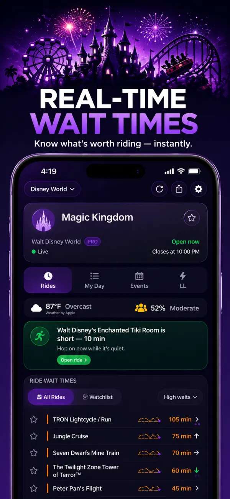
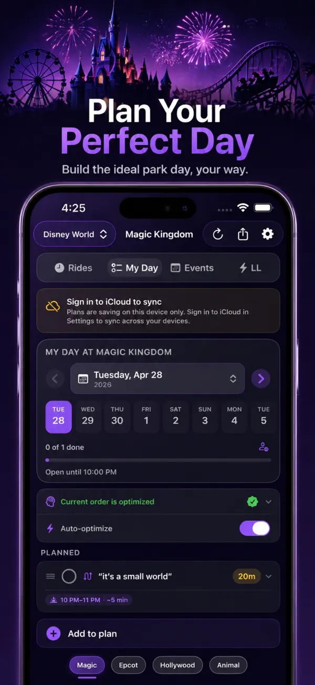
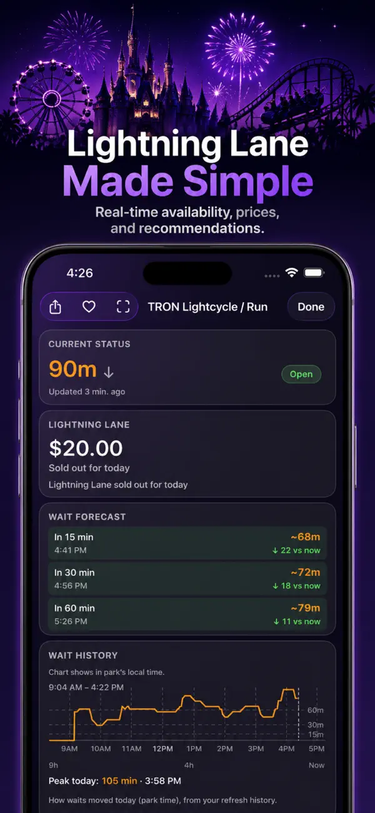

Walt Disney World
Magic Kingdom · EPCOT · Hollywood Studios · Animal Kingdom
Live waits. Better plans. Less guessing.
See current ride waits, build your day, follow Lightning Lane prices, and get the right update on iPhone or Apple Watch.
Free on iOS3 free days of ProAndroid waitlist
Inside the app
Magic Pulse turns live park data into a clear next step: compare waits, organize your day, and decide whether Lightning Lane is worth it.



Park coverage
Choose a park and keep the same waits, hours, weather, watchlist, and planning flow wherever the trip takes you.
Magic Kingdom · EPCOT · Hollywood Studios · Animal Kingdom
Disneyland Park · Disney California Adventure
Tokyo Disneyland · Tokyo DisneySea
Disneyland Park · Disney Adventure World
Clear sources Waits and hours from ThemeParks Wiki; weather from Apple Weather.
Privacy first No Magic Pulse account is required for core planning.
Direct support Questions and privacy requests go to one support form.
How it works
Build a list of rides, events, and meals. Auto-optimize reorders for shortest total wait. Pro sharing keeps the whole party in sync through iCloud.
Magic Pulse pulls live wait times, hours, weather, and Lightning Lane prices every few minutes — and surfaces what's most actionable on your Now card.
Smart drop alerts and Apple Watch glances tell you when to move. After the visit, your trip recap shows what you saved — shareable as a card.
Pricing
Free covers the essentials for checking waits and planning your day. Pro is for park days where alerts, shared plans, widgets, and no ads are worth having ready.
$0 forever
Best for checking live waits before and during a visit.
3 days free then $0.99 / week
Best for an active trip with alerts, shared plans, and Lock Screen tools.
$2.99 one time
Best for repeat visits and families who want Pro without a subscription.
Prices shown are for the United States App Store and may vary by region or over time. Pro purchases are billed through your Apple ID.
| Feature | Free | Pro |
|---|---|---|
| Live wait times, hours & weather | ✓ | ✓ |
| My Day planner, Lightning Lane tracker, Watch glance, Trip recap, iCloud sync | ✓ | ✓ |
| No ads | — | ✓ |
| Smart drop & reopen alerts | — | ✓ |
| Lightning Lane price alerts | — | ✓ |
| Day plan reminders | — | ✓ |
| Shared day plans (CloudKit) | — | ✓ |
| Live Activity & Lock Screen | — | ✓ |
| Home Screen widgets | — | ✓ |
| Siri & Shortcuts | — | ✓ |
| All future Pro updates | — | ✓ |
Before you install
Live waits and core planning do not require a Magic Pulse account. Optional Apple permissions unlock nearby suggestions, alerts, and sharing.
Accessibility
Magic Pulse includes support for common Apple accessibility settings throughout its core park and planning views.
An internet connection is needed for fresh waits. When service is spotty, Magic Pulse can show its last available cached snapshot. Read the Privacy Policy.
What's new
The latest patch fixes an issue that prevented the app from opening for some users. Version 1.8 also brought cleaner park pages and stronger live refresh behavior.
Read the App Store version historyFAQ
Yes. Free includes live waits, the day planner, Lightning Lane price tracking, the trip recap, the Apple Watch app, and iCloud settings sync. Pro adds drop alerts, Lightning Lane price alerts, day-plan reminders, shared day plans, Live Activity, widgets, Shortcuts, and no ads.
Yes. Free includes the My Day planner for rides, events, meals, and custom items. Pro adds shared CloudKit plans so family on iPhone or iPad sees and edits the same plan in real time.
Yes. The Lightning Lane tab shows live posted prices for Multi Pass and Single Pass attractions, a "Best Buy" recommendation that combines standby waits with historical price patterns, and price-drop alerts (Pro) so you can buy at the right moment.
Yes. The Watch app shows your selected park's crowd level, hours, and top watchlist ride wait at a glance. Complications surface the same data on supported watch faces, and a reachability indicator tells you when the iPhone is connected so you know your data is fresh.
Yes. Magic Pulse uses iCloud Key-Value storage to sync your watchlist, thresholds, accent color, and notification preferences across the iPhones and iPads on your Apple ID. Shared CloudKit plans also sync among invited family members.
Wait times and park hours come from ThemeParks Wiki. This site’s hero loads waits from the Magic Pulse API, falling back to ThemeParks Wiki’s public API if it’s unreachable.
No. Magic Pulse is an independent app and is not endorsed by Disney, Universal, or other park operators.
Walt Disney World, Disneyland Resort, Tokyo Disney Resort, and Disneyland Paris — multiple parks per region in one app.
Yes. The panel starts with a usable park selected by the Magic Pulse API, and you can choose any supported park. If the Magic Pulse API is unreachable, the selected park falls back to ThemeParks Wiki.
Get started free
Use live Disney wait times and planning tools to make quicker park-day decisions. Free to download on iOS.